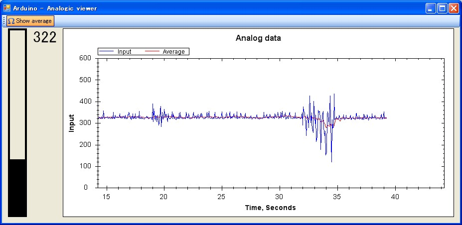

Input
Connects to the COM port and reads LINE PER LINE (in other works, expects a new line between each values) a STRING (1023, 289, 2) that is interpreted as an int and displayed. Better have your value between 0..1024, don't know the result if you put something else...
Nota bene :
- Port is fixed (sorry, I'm lazy) COM16 ... I'll make it changeable soon
- Baudrate is fixed (same excuse) 115200
The graph is done with the wonderful component zedGraph written in c# and fully free : please use it.
Download
Pictures
